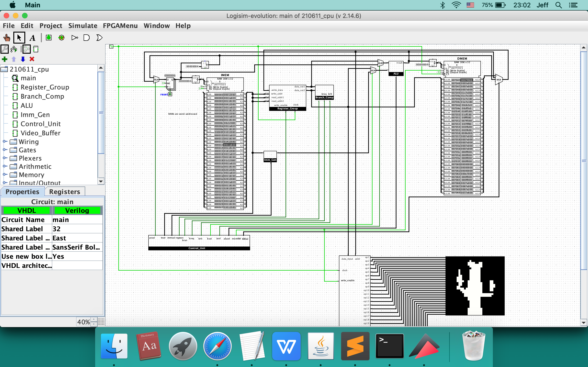

RISC-V; Capable of playing video

Source Code: Not yet made public
This is a 32-bit fully-fledged CPU under the RISC-V architecture. Its is built completely from scratch using logic gates and wires. From RAM to ALU to Control Unit, this homemade CPU is complete with all functional units. With its capability of understanding 32-bit RISC-V assembly language, you can run a vast range of computer programs on this hardware. As being demonstrated in the video, playing videos on its 32x32 screen is one example of having its power on display.
How it works? Write your program in any high level language and compile it into assembly. Then turn it into machine code using an assembler. The current CPU speed limit is at 4.2KHz due to the simulator's limit.